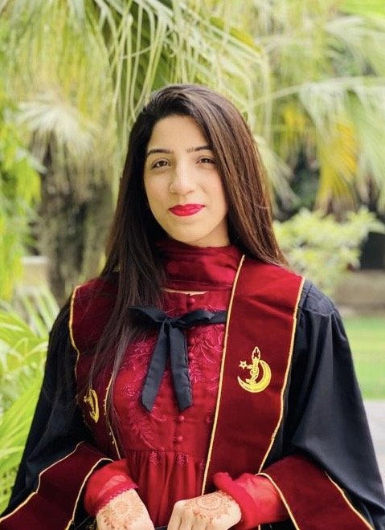
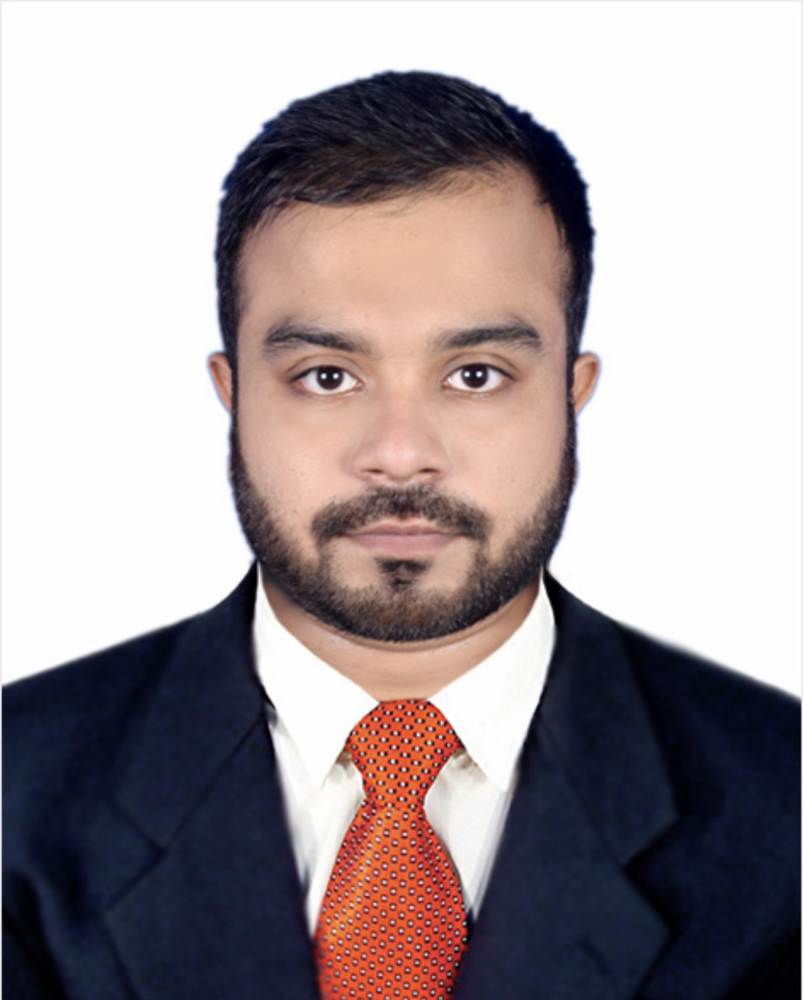

Bayt al-ʿĀfiyah Leadership Team
Dedicated professionals working towards healthcare, knowledge and community wellbeing.
Executive Leadership

Dr. Irfan Khan
Founder & Executive Director
Qualifications
- MBBS | Medical Officer
- Global Health Diplomacy – Health Services Academy, Islamabad
- MPH – Health Services Academy, Islamabad
- Global Health Challenges – University of Copenhagen, Denmark

Dr. Khizra Manzoor
Clinical Director
Qualifications
- MBBS
- Surgical Specialist
- FCPS (General Surgery)
Core Team

Dr. Faizan Ahmad
Lead – Primary Healthcare & Family Medicine
Qualifications
- MBBS
- Diploma in Family Medicine – KMU
- Medical Officer – Family Physician

Dr. Shahmal Lone
Lead – Medical & Health Education
Leads medical education, health awareness and digital content, including patient-focused educational materials and social media outreach.
Qualifications
- MBBS
- FCPS Neurosurgery Resident – Lahore General Hospital

Dr. M. Irfan
Lead – Research & Innovation
Qualifications
- MBBS
- Diploma in Family Medicine – KMU

Dr. Sohail Farooq
Lead – Community Health
Qualifications
- MBBS
- Medical Officer – THQ Baloch, AJK
International Representation
